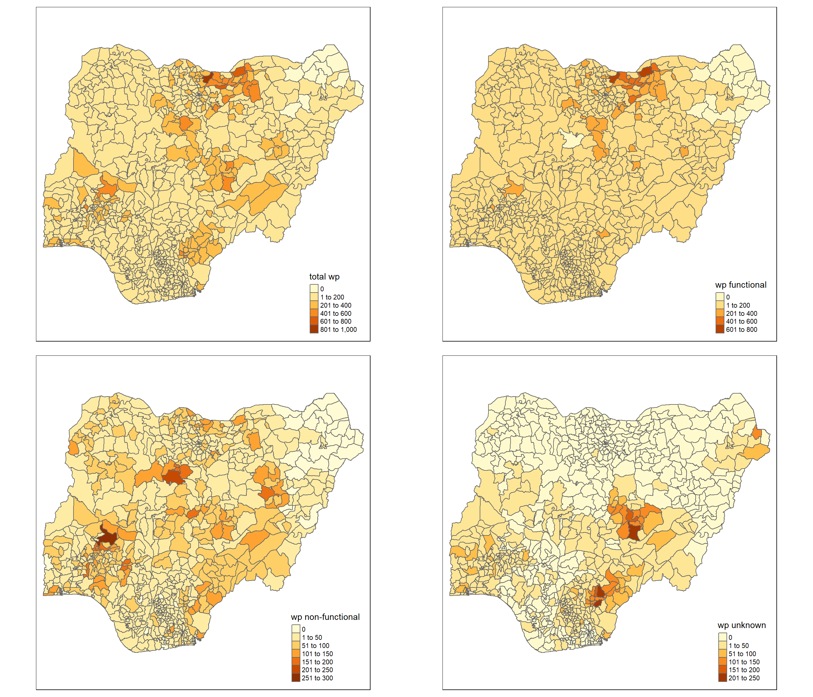

pacman::p_load(sf, tidyverse, tmap, spdep, funModeling)Take-home Exercise 1: Geospatial Analytics for Social Good
Overview
In this take-home exercise, with the purpose to address the issue of water supply in Nigeria, I will be using global and local measures of spatial Association techniques to reveal the spatial patterns of Non-functional water points in Nigeria.
The Data
Aspatial data
The aspatial data includes the water point data that can be downloaded from WPdx+ Global Data Repository. For this analysis, Shapefile data format is downloaded. The shapefile includes global water point data, the Nigeria water point data which will be used in our analysis is filtered in data importing section. The files’ names are renamed to “geo_export” for easier use.
Geospatial data
The geospatial data includes the Nigeria Level-2 Administratie Boundary (which is also known as Local Government Data LGA) polygon features GIS data which can be downloaded from geoBoundaries. In “Download geoBoundaries” section, key in “Nigeria” to Name, and download the ADM2 2020 data file. The files with name “geoBoundaries-NGA-ADM2” are used.
Getting Started
In this exercise, the following R packages will be used:
sf for importing, managing, and processing geospatial data
tidyverse for importing, wrangling, and visualizing data
tmap for plotting cartographic quality choropleth map
spdep for computing spatial weights, global and local spatial autocorrelation statistics
funModeling for Exploratory Data Analysis (EDA)
The code chunk below installs and loads R packages into R environment.
Importing the data into R environment
Importing water point shapefile into R environment
The code chunk below uses st_read() of sf package to import water point data geo_export shapefile into R and save as simple feature data frame called wp.
st_transform() of sf package is used to transform original geographic coordinate reference system (CRS) WGS84 to EPSG:26391 Minna/Nigeria West Belt, which is more appropriate for our analysis.
filter() of dplyr package is used to extract water point records of Nigeria.
wp <- st_read(dsn = "data/aspatial",
layer = "geo_export") %>%
st_transform(crs = 26391) %>%
filter(clean_coun == "Nigeria")Reading layer `geo_export’ from data source
`D:\GuanboShao\ISSS624\Take-home_Ex1\data\aspatial’ using driver `ESRI Shapefile’
Simple feature collection with 362604 features and 72 fields
Geometry type: POINT
Dimension: XY
Bounding box: xmin: -91.75435 ymin: -27.31495 xmax: 92.32694 ymax: 26.65254
Geodetic CRS: WGS84(DD)
From the output message, the simple feature data frame has 362604 features and 72 fields.
The code chunk below checks the CRS of wp.
st_crs(wp)Coordinate Reference System:
User input: EPSG:26391
wkt:
PROJCRS[“Minna / Nigeria West Belt”,
BASEGEOGCRS[“Minna”,
DATUM[“Minna”,
ELLIPSOID[“Clarke 1880 (RGS)”,6378249.145,293.465,
LENGTHUNIT[“metre”,1]]],
PRIMEM[“Greenwich”,0,
ANGLEUNIT[“degree”,0.0174532925199433]],
ID[“EPSG”,4263]],
CONVERSION[“Nigeria West Belt”,
METHOD[“Transverse Mercator”,
ID[“EPSG”,9807]],
PARAMETER[“Latitude of natural origin”,4,
ANGLEUNIT[“degree”,0.0174532925199433],
ID[“EPSG”,8801]],
PARAMETER[“Longitude of natural origin”,4.5,
ANGLEUNIT[“degree”,0.0174532925199433],
ID[“EPSG”,8802]],
PARAMETER[“Scale factor at natural origin”,0.99975,
SCALEUNIT[“unity”,1],
ID[“EPSG”,8805]],
PARAMETER[“False easting”,230738.26,
LENGTHUNIT[“metre”,1],
ID[“EPSG”,8806]],
PARAMETER[“False northing”,0,
LENGTHUNIT[“metre”,1],
ID[“EPSG”,8807]]],
CS[Cartesian,2],
AXIS[“(E)”,east,
ORDER[1],
LENGTHUNIT[“metre”,1]],
AXIS[“(N)”,north,
ORDER[2],
LENGTHUNIT[“metre”,1]],
USAGE[
SCOPE[“Engineering survey, topographic mapping.”],
AREA[“Nigeria - onshore west of 6°30’E, onshore and offshore shelf.”],
BBOX[3.57,2.69,13.9,6.5]],
ID[“EPSG”,26391]]
The coordinates system has been changed to ESPG code 26391, which is Nigeria West Belt.
The code chunk below uses write_rds() of readr package to save the extracted sf data table wp into rds data format file called wp_nga and is saved in data folder.
wp_nga <- write_rds(wp, "data/wp_nga.rds")Importing Nigeria LGA boundary data into R environment
Similar to importing water point shapefile, the geospatial data geoBoundaries-NGA-ADM2 shapefile is imported into R and saved as simple feature data frame called nga.
nga <- st_read(dsn = "data/geospatial",
layer = "geoBoundaries-NGA-ADM2") %>%
st_transform(crs = 26391)The code chunk below checks the CRS of nga.
st_crs(nga)Data Wrangling
Recording NA values into string
The code chunk below uses replace_na() to recode all NA values in status_cle field into Unknown.
mutate() of dplyr package is used to derive new variables called Unknown.
wp_nga <- read_rds("data/wp_nga.rds") %>%
mutate(status_cle =
replace_na(status_cle, "Unknown"))EDA
The code chunk below uses freq() of funModeling package to display the distribution of status_cle field in wp_nga.
freq(data = wp_nga,
input = 'status_cle')
According to the distribution diagram of each status, the proportion of functional water points includes Functional, Functional but not in use, and Functional but needs repair, which is 54.88% in total. The proportion of non-functional water points includes Non-Functional, Non-Functional due to dry season, Abandoned/Decommissioned, Abandoned, and Non functional due to dry season which is 33.9% in total.
Extracting Water Point Data
In this section, I will use filter() to extract water point records by using classes in status_cle field.
Extracting functional water point
The code chunk below uses filter() to select functional water points from wp_nga and name as wp_functional.
wp_functional <- wp_nga %>%
filter(status_cle %in%
c("Functional",
"Functional but not in use",
"Functional but needs repair"))The code chunk below uses freq() to display the distribution of functional water points.
freq(data = wp_functional,
input = 'status_cle')Extracting non-functional water point
The code chunk below uses filter() to select non-functional water points from wp_nga and name as wp_nonfunctional.
wp_nonfunctional <- wp_nga %>%
filter(status_cle %in%
c("Non-Functional",
"Non-Functional due to dry season",
"Abandoned/Decommissioned",
"Abandoned",
"Non functional due to dry season"))The code chunk below uses freq() to display the distribution of non-functional water points.
freq(data = wp_nonfunctional,
input = 'status_cle')Extracting water point with Unknown class
The code chunk below uses filter() to select Unknown water points from wp_nga and name as wp_unknown.
wp_unknown <- wp_nga %>%
filter(status_cle %in%
c("Unknown"))The code chunk below uses freq() to display the distribution of unknown water points.
freq(data = wp_unknown,
input = 'status_cle')Performing Point-in-Polygon Count
In this section, st_intersects() of sf package to identify the water points located in each region of Nigeria, length() of Base R is used to calculate the number of water points in each region.
mutate() of dplyr package is used to derive new variables namely total wp, wp functional, wp non-functional, and wp unknown.
nga_wp <- nga %>%
mutate(`total wp` = lengths(st_intersects(nga, wp_nga))) %>%
mutate(`wp functional` = lengths(st_intersects(nga, wp_functional))) %>%
mutate(`wp non-functional` = lengths(st_intersects(nga, wp_nonfunctional))) %>%
mutate(`wp unknown` = lengths(st_intersects(nga, wp_unknown)))Saving the Analytical Data Table
The code chunk below uses mutate() to derive 2 fields namely pct_functional and pct_non-functional, which is the proportion of functional water points and non-functional water points in each region.
nga_wp <- nga_wp %>%
mutate(pct_functional = `wp functional`/`total wp`) %>%
mutate(`pct_non-functional` = `wp non-functional`/`total wp`)The code chunk below uses write_rds() of readr package to save the extracted sf data table nga_wp into rds data format file called wp_nga and is saved in data folder.
write_rds(nga_wp, "data/wp_nga.rds")Upon completing the above sections, we achieve an rds data format file called wp_nga which has a file size of 2.1MB. This allows us to keep a small size data file and delete raw data files which occupy space of several gigabytes. In the following section, wp_nga.rds will be used for analysis. A RMarkdown code {r eval=FALSE} is used to skip evaluating previous code chunks and exclude their results so that the wp_nga.rds file will not be modified. If need to reproduce the previous sections, please change {r eval=FALSE} to {r} then proceed to run the code chunks.
Visualizing the Spatial Distribution of Water Points
Plotting thematic maps by using qtm()
qtm() of tmap package provides a quick visualization of thematic map.
tmap_arrange() is used to create multiple stand-alone maps.
nga_wp <- read_rds("data/wp_nga.rds")
total <- qtm(nga_wp, "total wp")
wp_functional <- qtm(nga_wp, "wp functional")
wp_nonfunctional <- qtm(nga_wp, "wp non-functional")
unknown <- qtm(nga_wp, "wp unknown")
tmap_arrange(total, wp_functional, wp_nonfunctional, unknown, asp = 1, ncol = 2)
Plotting thematic maps by using tmap elements
tm_shape() is used to define a spatial data object.
tm_fill() is used to fill the polygons, a classification method is selected by style option. An equal map is obtained by setting style = “equal”, the number of categories n is set to 4. A quantile map is obtained by setting style = “quantile”, and n = 4.
tm_layout() is used to customize the map layout, including title and legend.
tm_borders() is used to define the borders of the polygons, alpha defines the transparency of line.
tmap_arrange() is used to create multiple stand-alone maps.
map_equal <- tm_shape(nga_wp)+
tm_fill(c("wp functional", "wp non-functional"),
n = 4,
style = "equal",
palette = "Blues") +
tm_layout(main.title = "Distribution of Water Points \n(Equal classification)",
main.title.position = "center",
main.title.size = 1.5,
legend.height = 0.45,
legend.width = 0.35,
legend.outside = FALSE,
legend.position = c("right", "bottom"),
frame = FALSE) +
tm_borders(alpha = 0.5)
map_quantile <- tm_shape(nga_wp)+
tm_fill(c("wp functional", "wp non-functional"),
n = 4,
style = "quantile",
palette = "Greens") +
tm_layout(main.title = "Distribution of Water Points \n(Quantile classification)",
main.title.position = "center",
main.title.size = 1.5,
legend.height = 0.45,
legend.width = 0.35,
legend.outside = FALSE,
legend.position = c("right", "bottom"),
frame = FALSE) +
tm_borders(alpha = 0.5)
tmap_arrange(map_equal, map_quantile, asp = 1, ncol = 2)Cluster and Outlier Analysis
Computing contiguity spatial weights
poly2nb() of spdep package is used to compute contiguity weight matrices of Nigeria. This function with default setting queen = TRUE builds a neighbours list based on regions with contiguous boundaries.
wm_q <- poly2nb(nga_wp,
queen = TRUE)
set.ZeroPolicyOption(TRUE)[1] FALSEsummary(wm_q)Neighbour list object:
Number of regions: 774
Number of nonzero links: 4440
Percentage nonzero weights: 0.7411414
Average number of links: 5.736434
1 region with no links:
86
Link number distribution:
0 1 2 3 4 5 6 7 8 9 10 11 12 14
1 2 14 57 125 182 140 122 72 41 12 4 1 1
2 least connected regions:
138 560 with 1 link
1 most connected region:
508 with 14 linksIn Nigeria, there are 774 regions, the most connected region has 14 neighbors. There are 2 regions with only 1 neighbor.
Row-standardized weights matrix
nb2listw() of spdep package is used to assign spatial weights to each polygon in neighbors list. style is set to ‘W’ for row standardized option. zero.policy is set to TRUE to insert weights vectors of zero length for regions without neighbor in the neighbors list.
rswm_q <- nb2listw(wm_q,
style="W",
zero.policy = TRUE)
rswm_qCharacteristics of weights list object:
Neighbour list object:
Number of regions: 774
Number of nonzero links: 4440
Percentage nonzero weights: 0.7411414
Average number of links: 5.736434
1 region with no links:
86
Weights style: W
Weights constants summary:
n nn S0 S1 S2
W 773 597529 773 285.0658 3198.414Maron’s I test
moran.test() of spdep package is used to perform Moran’s I statistics testing which measures the spatial autocorrelation and how one region is similar to its neighbors by standardizing the spatial autocovariance by the variance of data.
moran.test(nga_wp$`wp non-functional`,
listw=rswm_q,
zero.policy = TRUE,
na.action=na.omit)
Moran I test under randomisation
data: nga_wp$`wp non-functional`
weights: rswm_q n reduced by no-neighbour observations
Moran I statistic standard deviate = 20.07, p-value < 2.2e-16
alternative hypothesis: greater
sample estimates:
Moran I statistic Expectation Variance
0.4345111969 -0.0012953368 0.0004715237 The p-value for non-functional water points is statistically significant, therefore the spatial distribution is more spatially clustered than would be expected if underlying spatial processes were random.
Computing Monte Carlo Moran’s I
moran.mc() of spdep package is used to perform permutation test for Moran’s I statistic. nsim = 999 means 1000 simulations will be performed.
set.seed(1234)
bperm= moran.mc(nga_wp$`wp non-functional`,
listw=rswm_q,
nsim=999,
zero.policy = TRUE,
na.action=na.omit)
bperm
Monte-Carlo simulation of Moran I
data: nga_wp$`wp non-functional`
weights: rswm_q
number of simulations + 1: 1000
statistic = 0.43451, observed rank = 1000, p-value = 0.001
alternative hypothesis: greaterThe Moran’s I value is 0.43451, therefore we can reject the null hypothesis and conclude that positive spatial autocorrelation is occurring.
Visualizing Monte Carlo Moran’s I
hist() and abline() of R Graphics are used to plot the distribution of statistical values.
hist(bperm$res,
freq=TRUE,
breaks=20,
xlab="Simulated Moran's I")
abline(v=0,
col="red") 
Geary’s C test
geary.test() of spdep package is used to perform Geary’s C test which measures spatial autocorrelation and determine whether adjacent similar observations are correlated by summing the square differences between pairs of data.
geary.test(nga_wp$`wp non-functional`,
listw=rswm_q)
Geary C test under randomisation
data: nga_wp$`wp non-functional`
weights: rswm_q
Geary C statistic standard deviate = 14.479, p-value < 2.2e-16
alternative hypothesis: Expectation greater than statistic
sample estimates:
Geary C statistic Expectation Variance
0.6166737225 1.0000000000 0.0007009361 The Geary’s C test statistic is 0.6166737225 < 1, therefore there is a positive spatial autocorrrelation and clustered.
Computing Monte Carlo Geary’s C
geary.mc() of spdep package is used to perform permutation test for Geary’s C statistic. nsim = 999 means 1000 simulations will be performed.
set.seed(1234)
bperm=geary.mc(nga_wp$`wp non-functional`,
listw=rswm_q,
nsim=999)
bperm
Monte-Carlo simulation of Geary C
data: nga_wp$`wp non-functional`
weights: rswm_q
number of simulations + 1: 1000
statistic = 0.61667, observed rank = 1, p-value = 0.001
alternative hypothesis: greaterThe Monte Carlo Geary’s C test statistic shows same result as Geary’s C test result which is 0.61667 < 1, therefore there is a positive spatial autocorrrelation and clustered.
Visualizing Monte Carlo Geary’s C
hist() and abline() of R Graphics are used to plot the distribution of statistical values.
hist(bperm$res,
freq=TRUE,
breaks=20,
xlab="Simulated Geary's C")
abline(v=1,
col="red") Compute Moran’s I correlogram
sp.correlogram() of spdep package is used to compute a 5-lag spatial correlogram of non-functional water points. The global spatial autocorrelation is set to Moran’s I by method = “I”.
plot() of base Graph is used to plot the output.
MI_corr <- sp.correlogram(wm_q,
nga_wp$`wp non-functional`,
order=5,
method="I",
style="W")
plot(MI_corr)print(MI_corr)Spatial correlogram for nga_wp$`wp non-functional`
method: Moran's I
estimate expectation variance standard deviate Pr(I) two sided
1 (773) 4.3451e-01 -1.2953e-03 4.7152e-04 20.0698 < 2.2e-16
2 (773) 2.6672e-01 -1.2953e-03 2.0206e-04 18.8546 < 2.2e-16
3 (773) 1.9545e-01 -1.2953e-03 1.2189e-04 17.8208 < 2.2e-16
4 (773) 1.4034e-01 -1.2953e-03 8.7591e-05 15.1333 < 2.2e-16
5 (773) 6.4101e-02 -1.2953e-03 6.8780e-05 7.8854 3.136e-15
1 (773) ***
2 (773) ***
3 (773) ***
4 (773) ***
5 (773) ***
---
Signif. codes: 0 '***' 0.001 '**' 0.01 '*' 0.05 '.' 0.1 ' ' 1Compute Geary’s C correlogram
sp.correlogram() of spdep package is used to compute a 5-lag spatial correlogram of non-functional water points. The global spatial autocorrelation is set to Geary’s C by method = “C”.
plot() of base Graph is used to plot the output.
GC_corr <- sp.correlogram(wm_q,
nga_wp$`wp non-functional`,
order=5,
method="C",
style="W")
plot(GC_corr)
print(GC_corr)Spatial correlogram for nga_wp$`wp non-functional`
method: Geary's C
estimate expectation variance standard deviate Pr(I) two sided
1 (773) 0.61667372 1.00000000 0.00070094 -14.4787 < 2.2e-16 ***
2 (773) 0.74713982 1.00000000 0.00038527 -12.8824 < 2.2e-16 ***
3 (773) 0.80930633 1.00000000 0.00027289 -11.5437 < 2.2e-16 ***
4 (773) 0.86695944 1.00000000 0.00024425 -8.5127 < 2.2e-16 ***
5 (773) 0.94962924 1.00000000 0.00024046 -3.2483 0.001161 **
---
Signif. codes: 0 '***' 0.001 '**' 0.01 '*' 0.05 '.' 0.1 ' ' 1